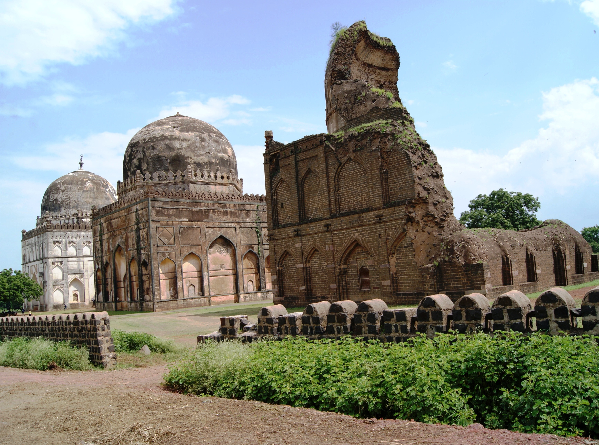
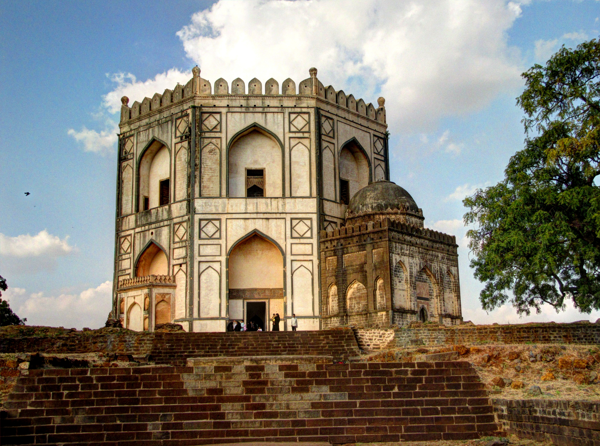
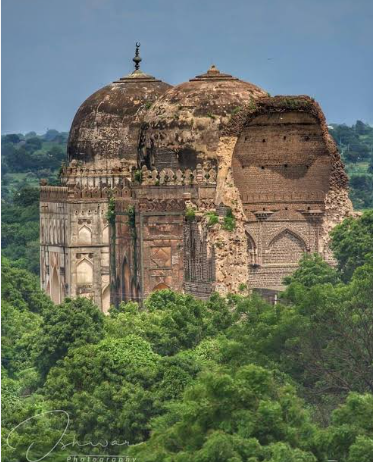
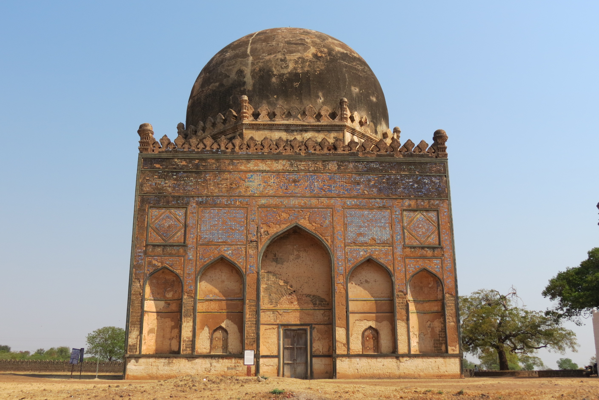
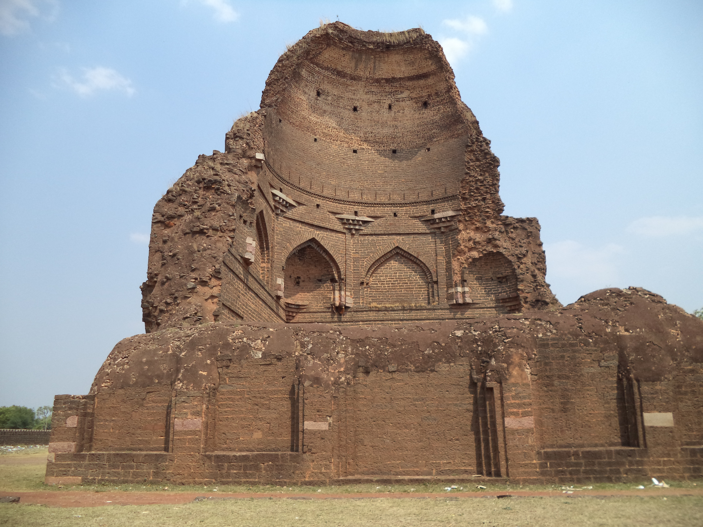
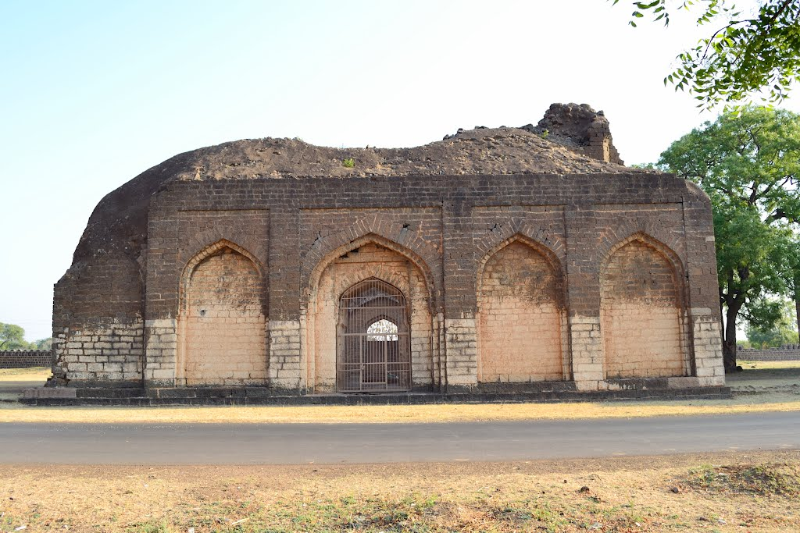

About Bahmani Tombs
The Bahmani Tombs at Ashtur are an important historical monument complex in Bidar, Karnataka. The tombs are the final resting places of rulers and members of the Bahmani dynasty.
The complex is known for its distinctive Indo-Islamic architecture and beautiful domes, arches, decorative designs and historic inscriptions.
History
The Bahmani Sultanate ruled parts of the Deccan between the 14th and 16th centuries. Sultan Ahmad Shah I shifted the capital from Gulbarga to Bidar in 1432, making Bidar an important centre of the Bahmani Kingdom.
The tombs were built mainly between the 15th and 16th centuries. Several Bahmani rulers, queens and members of the royal family were buried in this complex.
Architecture
The tombs combine Persian and local Deccan architectural influences. They feature large domes, arched entrances, stone masonry, decorative tiles, geometric patterns and Persian and Quranic inscriptions.
Bahmani Tombs Gallery
Explore the historic beauty of the Bahmani Tombs.






📍 Location
Bahmani Tombs, Ashtur, Bidar, Karnataka, India
🗺️ View on Google Maps